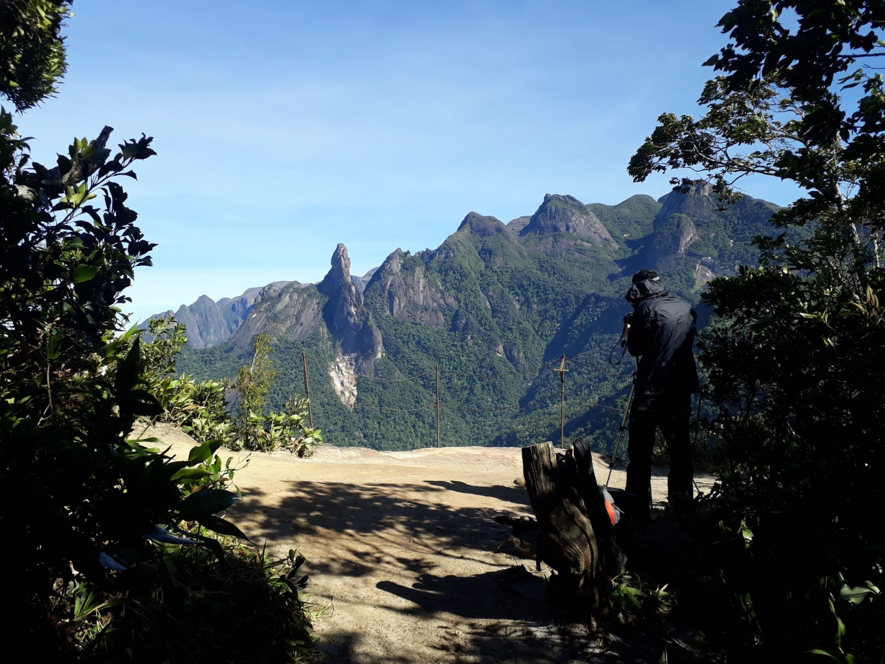
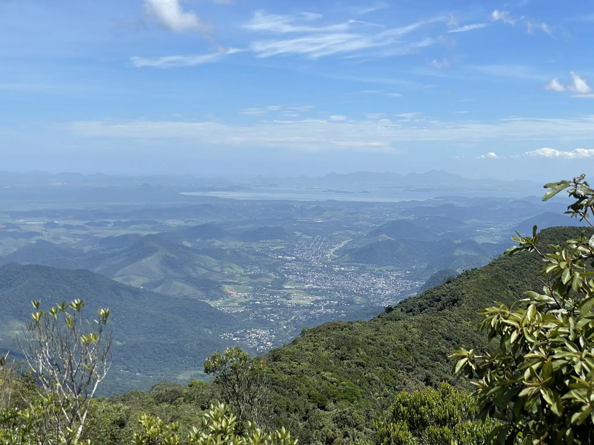
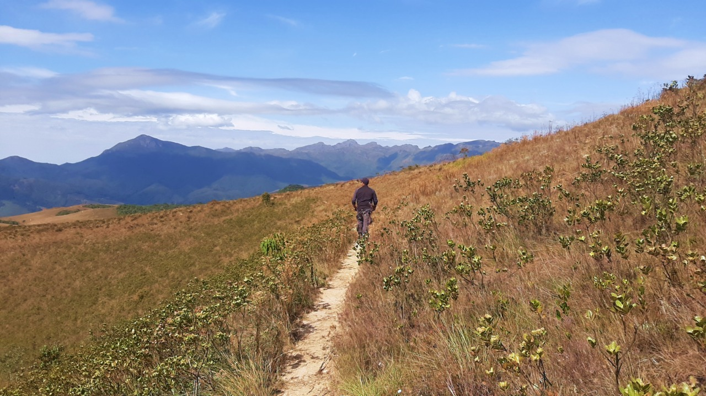
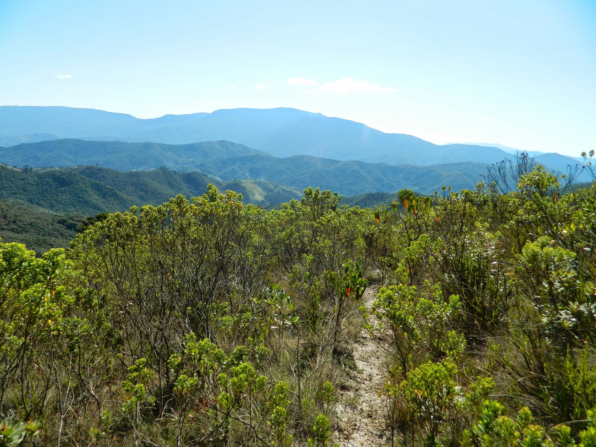
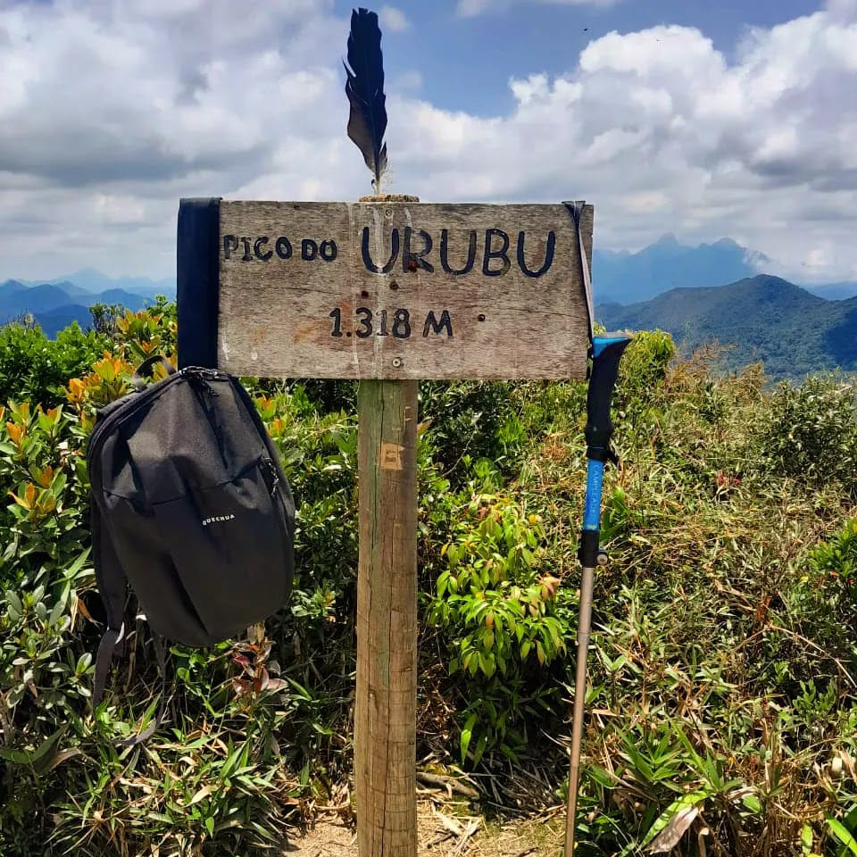
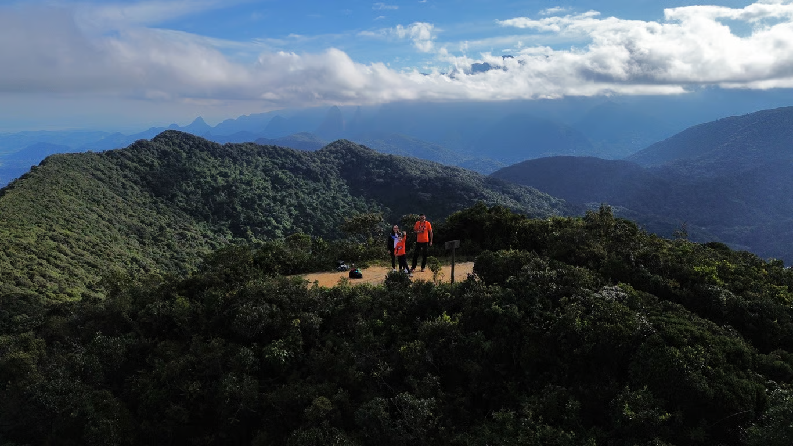
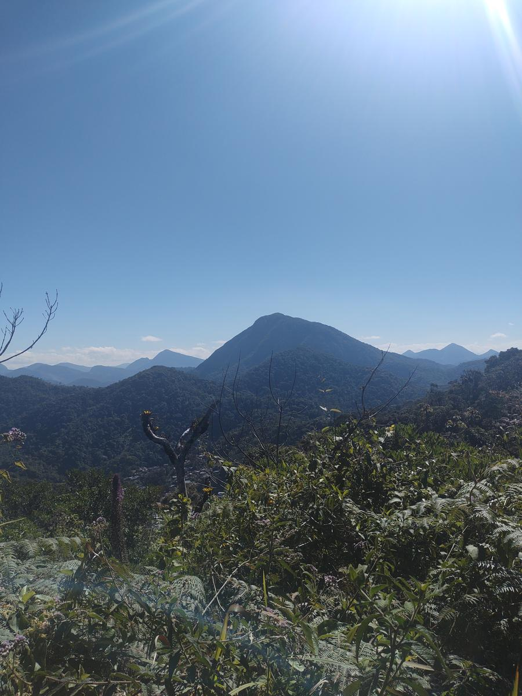
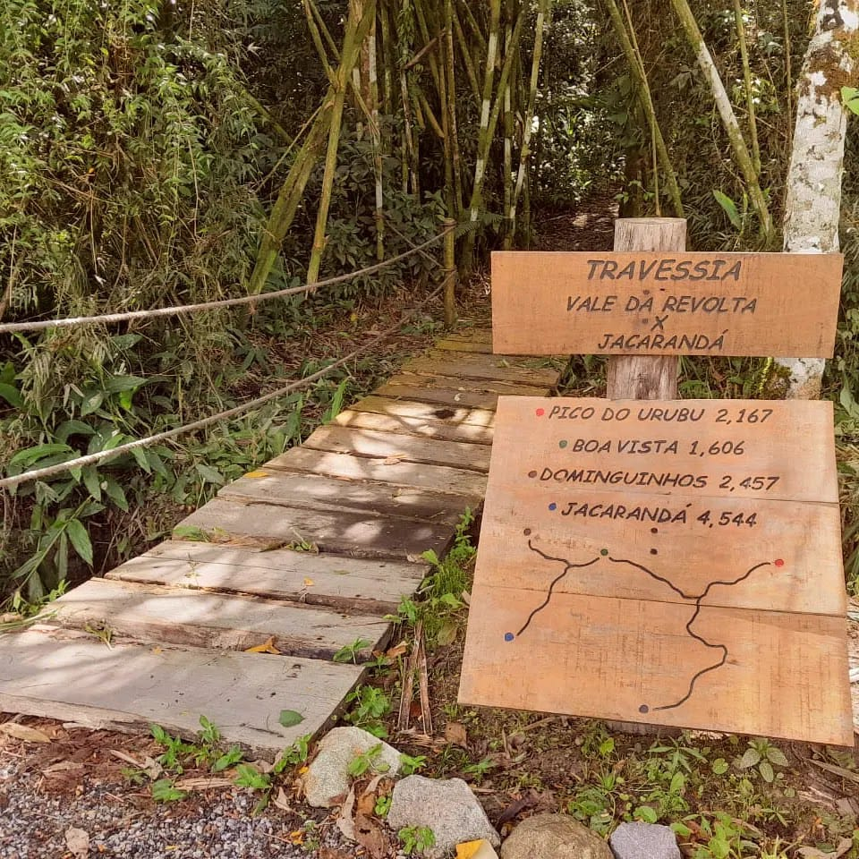
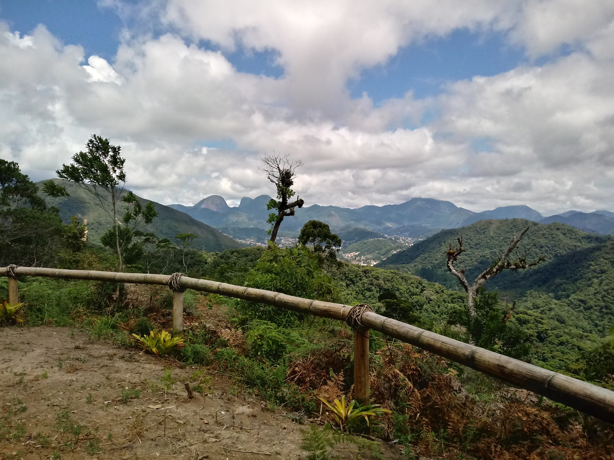

Principais Trilhas do Parque Estadual dos Três Picos
Pedra do Elefante



A Pedra do Elefante, também conhecida como Morro do Elefante, é um dos monumentos naturais mais imponentes na entrada de Teresópolis. Localizada estrategicamente próxima ao Mirante do Soberbo, esta formação rochosa oferece uma das vistas mais privilegiadas e frontais da Serra dos Órgãos, sendo um destino obrigatório para quem busca contemplação e belas fotografias. A Experiência da Trilha: Com um nível de dificuldade moderado, a trilha apresenta trechos de subida íngreme e terreno que exige atenção, especialmente em dias úmidos. O percurso é cercado por uma vegetação densa de Mata Atlântica, proporcionando um contato direto com a flora local. Durante a caminhada, o som das águas e o canto dos pássaros acompanham o trilheiro até o topo, a aproximadamente 1.180 metros de altitude. O Visual de Tirar o Fôlego: Chegar ao cume da Pedra do Elefante é como estar em um camarote para a Serra dos Órgãos. De lá, é possível ver o icônico Dedo de Deus em toda a sua magnitude, além do Escalavrado e da icônica Verruga do Frade. A vista se estende até a Baía de Guanabara em dias de céu limpo, criando um contraste inesquecível entre a montanha e o horizonte distante.
- Destaques e Curiosidades:
Dica EcoSerra: Não esqueça de levar água, protetor solar e, claro, recolher todo o seu lixo. Vamos preservar esse santuário!
Trilha Pico da Boa Vista





O Pico da Boa Vista é um dos pontos culminantes de Teresópolis que oferece
uma das vistas mais completas e
deslumbrantes da Região Serrana. Localizada em uma área de transição que proporciona uma visão
privilegiada do Parque Estadual dos Três Picos, esta elevação é o destino ideal para quem busca
silêncio, contemplação e uma perspectiva única da área urbana integrada à natureza.
A Experiência da Trilha: Com um nível de dificuldade moderado, a trilha alterna trechos de mata fechada
com áreas de campo aberto. O percurso exige preparo físico e atenção à navegação, especialmente nos trechos
finais onde a vegetação se torna mais baixa. Durante a subida, o trilheiro é cercado pela rica
biodiversidade da Mata Atlântica, sendo possível observar a mudança da flora à medida que a
altitude aumenta, proporcionando uma imersão total no ecossistema local.
O Visual de Tirar o Fôlego: Chegar ao cume do Pico da Boa Vista, a aproximadamente 1.195 metros de
altitude, é contemplar Teresópolis de um ângulo de 360 graus. De lá, é possível avistar desde o
imponente conjunto dos Três Picos e a Mulher de Pedra até a icônica silhueta da Serra dos Órgãos ao longe.
O contraste entre o relevo acidentado das montanhas e o vale da cidade cria um cenário inesquecível, que
se torna ainda mais mágico durante o nascer ou o pôr do sol.
- Destaques e Curiosidades:
Dica EcoSerra: Não esqueça de levar água, protetor solar e, claro, recolher todo o seu lixo. Vamos preservar esse santuário!
Trilha Pico do Urubu



O Pico do Urubu é um dos segredos mais bem guardados de Teresópolis, oferecendo um refúgio de tranquilidade e uma vista privilegiada para os amantes do montanhismo contemplativo. Localizado em uma área estratégica que faz divisa com o Parque Estadual dos Três Picos, esta formação se destaca por proporcionar um contato íntimo com a natureza reservada e um visual que abrange a exuberante biodiversidade da região serrana. A Experiência da Trilha: Com um nível de dificuldade moderado, a trilha apresenta um percurso que exige fôlego e calçados apropriados, com trechos de subida constante através da mata nativa. O trajeto é cercado por uma vegetação densa de Mata Atlântica, proporcionando um ambiente fresco e sombreado durante boa parte da caminhada. Durante o percurso, o som das águas próximas e o canto dos pássaros acompanham o trilheiro até o cume, criando uma experiência de desconexão total com o ambiente urbano. O Visual de Tirar o Fôlego: Chegar ao cume do Pico do Urubu é como estar em uma varanda natural voltada para o coração das montanhas. De lá, é possível ver o imponente conjunto do Parque Nacional da Serra dos Órgãos sob uma perspectiva diferente, além de uma vista limpa dos vales que cercam a cidade. A altitude proporciona uma brisa constante e um cenário perfeito para fotografias, onde as variações de luz entre as nuvens e as montanhas criam um espetáculo visual único em cada visita.
- Destaques e Curiosidades:
Dica EcoSerra: Não esqueça de levar água, protetor solar e, claro, recolher todo o seu lixo. Vamos preservar esse santuário!
Trilha Prata dos Aredes


A Trilha Prata dos Aredes é um dos tesouros mais preservados do núcleo de Teresópolis do Parque Estadual dos Três Picos. Localizada em uma área de transição entre a zona rural e as montanhas imponentes, esta trilha oferece um mergulho autêntico na história e na biodiversidade da região, sendo um destino ideal para quem busca uma caminhada conectada com a tranquilidade da vida no campo. A Experiência da Trilha: Com um nível de dificuldade leve a moderado, a trilha é marcada por um relevo mais suave em comparação aos grandes picos vizinhos, o que a torna perfeita para famílias e observadores da natureza. O percurso atravessa áreas de reflorestamento e mata nativa em recuperação, permitindo que o trilheiro observe de perto o trabalho de preservação ambiental. O caminho é acompanhado pelo som suave de pequenos riachos e pela presença constante da flora característica da Mata Atlântica de altitude. O Espetáculo Visual: O grande diferencial da Prata dos Aredes é o seu visual bucólico e relaxante. Ao longo do trajeto, mirantes naturais revelam vales verdes e a silhueta das montanhas que compõem o PETP sob um ângulo menos conhecido. Em dias de céu limpo, a luz do sol destaca as diferentes texturas das encostas rochosas, criando um cenário de paz que parece ter saído de uma pintura, longe do movimento intenso das rotas turísticas tradicionais da cidade.
- Destaques e Curiosidades:
Dica EcoSerra: Não esqueça de levar água, agasalhos, protetor solar e, claro, recolher todo o seu lixo. Vamos preservar esse santuário!
Cachoeiras Disponiveis do Parque Estadual dos Três Picos
Cachoeira dos Frades


A Cachoeira dos Frades é um dos destinos naturais mais encantadores de Teresópolis, localizada em uma região cercada pela exuberante vegetação da Mata Atlântica. Com suas quedas d’água em níveis e piscinas naturais de águas cristalinas, o local é ideal para quem busca tranquilidade, contato com a natureza e momentos de lazer ao ar livre. O acesso até a cachoeira envolve uma caminhada leve, com trechos bem definidos e rodeados por paisagens naturais deslumbrantes. Durante o percurso, é possível observar a fauna e flora locais, além de aproveitar o som relaxante da água corrente. A experiência é considerada de nível fácil, sendo indicada tanto para iniciantes quanto para visitantes que desejam um passeio mais tranquilo. Ao chegar, o visitante é recompensado com um cenário perfeito para banho, descanso e contemplação. As formações rochosas ao redor criam pequenas quedas e poços ideais para se refrescar, especialmente em dias mais quentes. A área também é bastante procurada por fotógrafos e amantes da natureza.
- Destaques e Aventura:
Dica EcoSerra: Não esqueça usar calçados adequadosde, levar água, protetor solar e, claro, recolher todo o seu lixo. Vamos preservar esse santuário!